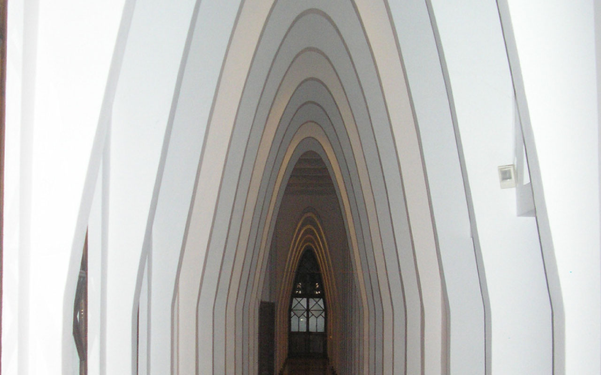
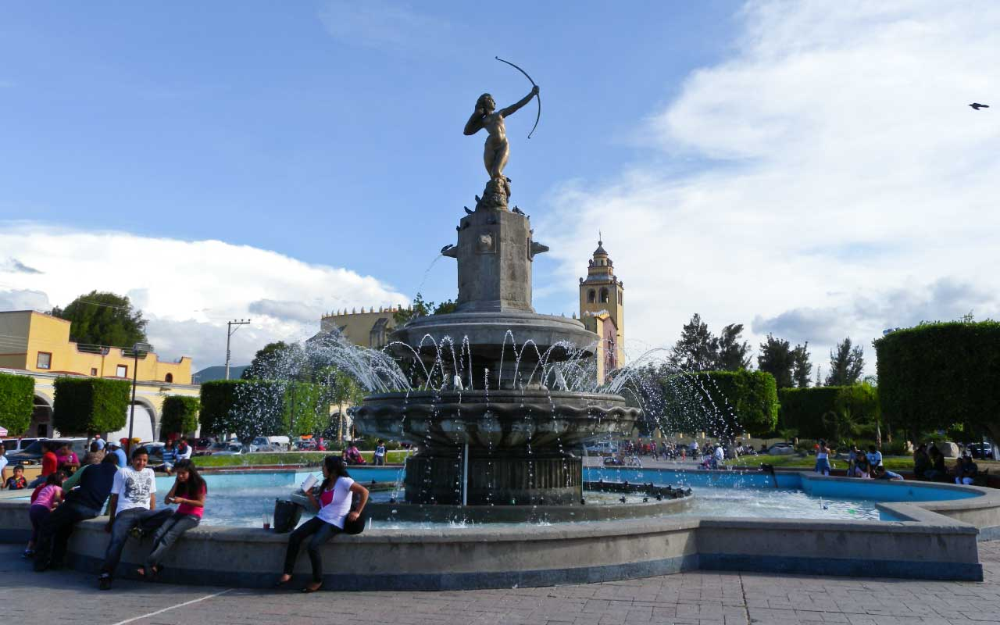
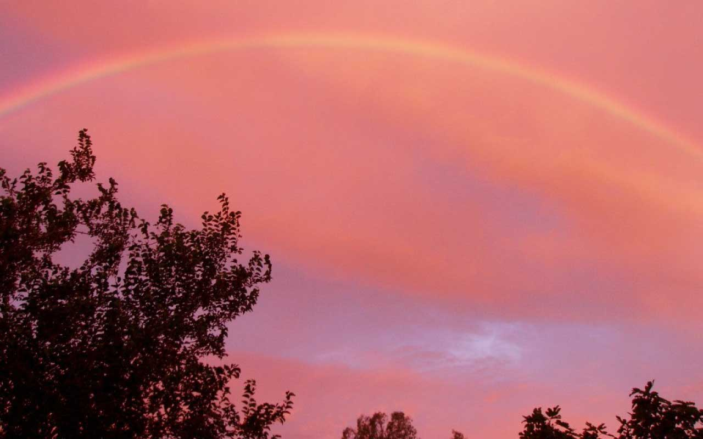

Introducción. En esta unidad iniciamos el estudio de las secciones cónicas (parábola, circunferencia elipse) mismas que se obtienen por la intersección de un cono (circular recto u oblicuo) y un plano, lo único que hay que hacer es ir variando el plano. Para nuestro caso si el plano de corte es paralelo a una generatriz (lado del cono), formamos una parábola como se muestra en la figura 1.

Figura 1. Imagen de K-F.U.N 2, Wikimedia Commons.
Asimismo se obtendrá la ecuación de una parábola a partir de su definición (foco y Directriz), se identificaran sus elementos a partir de una ecuación y se resolverán problemas que involucren a la parábola y sus propiedades.
Desarrollo. Las aplicaciones de la parábola en la vida cotidiana son múltiples. Una propiedad importante de la parábola es la de reflexión, la cual tiene muchas aplicaciones, por ejemplo, en los faros de los automóviles, las antenas parabólicas, los telescopios, los micrófonos etcétera. Otras aplicaciones de la parábola son: los chorros de agua, cocinas solares, puentes colgantes, trayectoria de objetos celestes, deportes, iluminación, en la arquitectura, entre otros.
Cierre. De acuerdo con lo anterior, las siguientes figuras ilustran algunos ejemplos antes mencionados: El Palacio de las Teresianas (Gaudí), la fuente de la Diana Cazadora, el arcoíris y un puente colgante. Todos ellos basados en formas parabólicas.

Imagen de vito7, Wikimedia Commons.

Imagen de ismael villafranco Wikimedia Commons.

Imagen de Musia!. Wikimedia Commons.
Imagen de crispy-fotografie. Pixabay.
A partir de esto, comenzarás a ir precisando el sentido matemático a "lo parabólico", a través del recorrido que haga de las partes expuestas en esta unidad de aprendizaje.